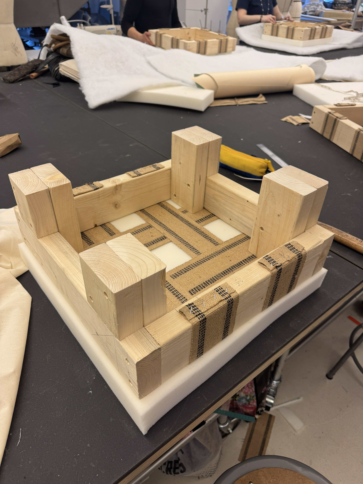
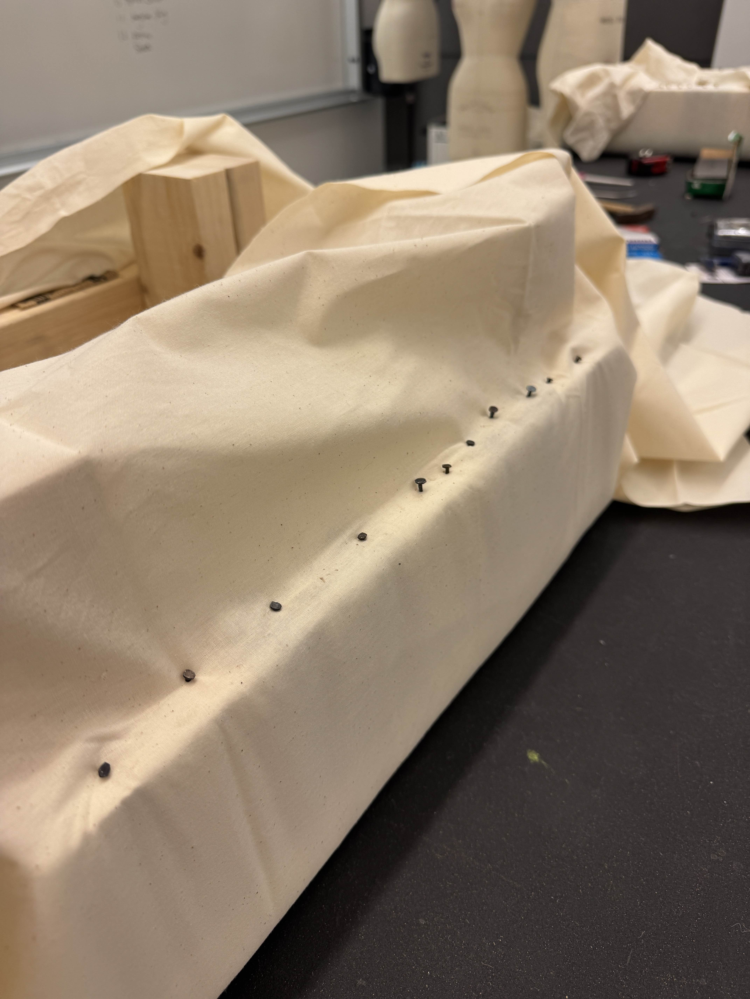
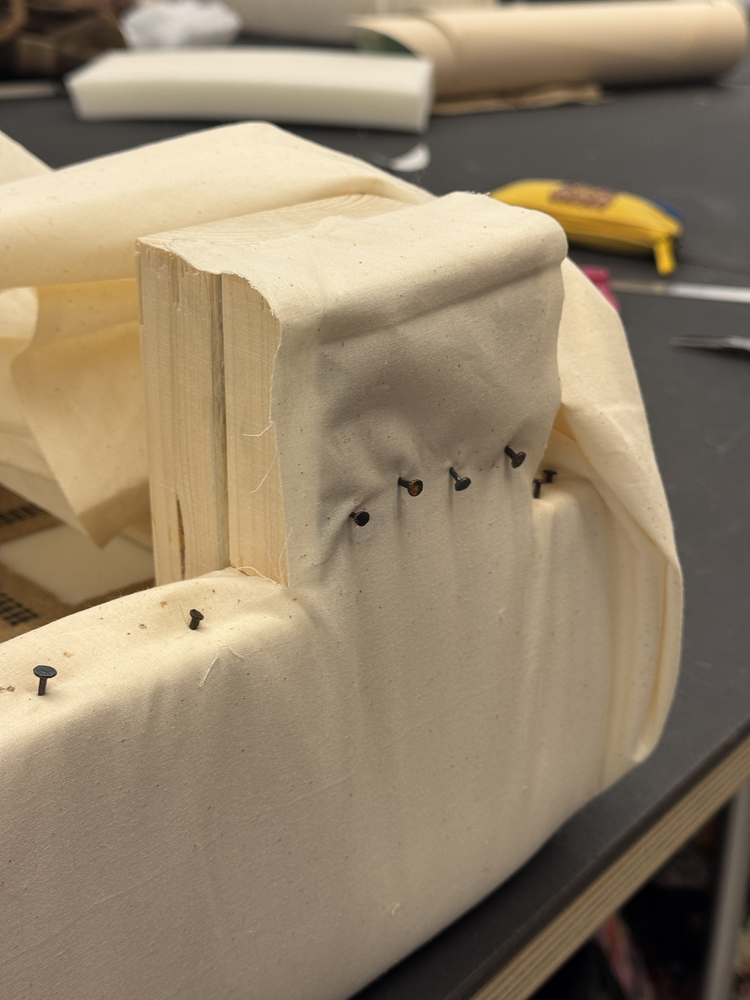
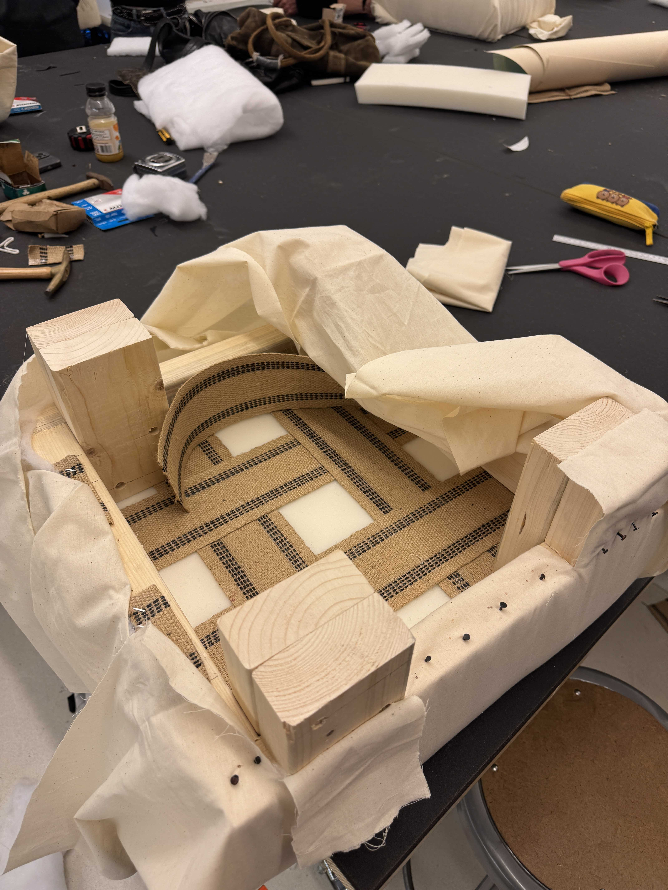
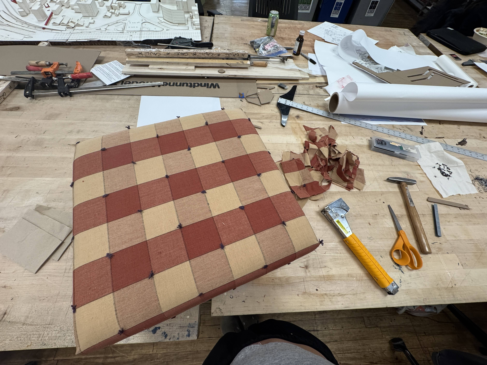
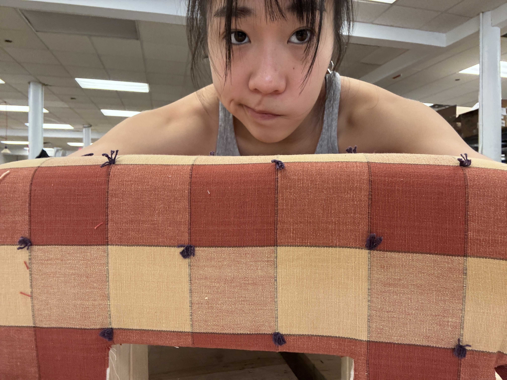
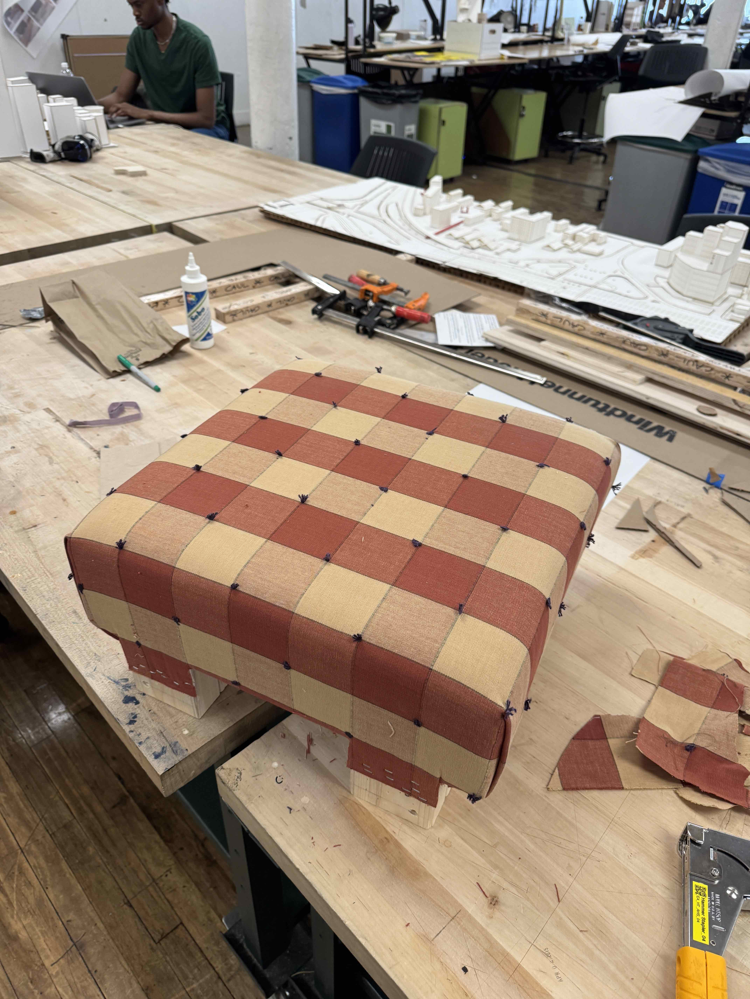

ottoman (Apr 2025)
for UPHOLSTERY & SOFT GOODS with Elise McMahon @likemindedobjects (SPRING 2025)

For the Slip Seat project, I cut down an 8’ long, 2” thick, 4” wide pine board into pieces to create the frame, I also added legs using the leftover wood and made it into an ottoman. I then used webbing, foams, batting, muslin, and a nice top fabric and created the rest of the seat. To cover up the legs, I sewed these leg covers so the wood wouldn’t show and all the staples are hidden for a cleaner look.
top fabric: wheat, mineral red and navy tufted big checks






